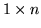
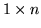

Constrained MLLR Transformation Matrix (CMLLR)
Substituting the for expressions for CMLLR adaptation where9.5
into the auxiliary function, and using the fact that the covariance
matrices are diagonal yields
where
is  row of
row of
 , the  row vector
is the zero
extended vector of cofactors of
, the  row vector
is the zero
extended vector of cofactors of  ,
,
 and
are defined as
and
are defined as
and
Differentiating the auxiliary function with respect to the transform
, and then maximising it with respect to the transformed mean
yields the following update
where  satisfies
satisfies
 |
|
|
(9.23) |
There are thus two possible solutions for . The solutions that
yields the maximum increase in the auxiliary function (obtained by
simply substituting in the two options) is used. This is an iterative
optimisation scheme as the cofactors mean the estimate of row  is
dependent on all the other rows (in that block).
is
dependent on all the other rows (in that block).
Back to HTK site
See front page for HTK Authors
![$\displaystyle {\cal Q}({\cal M},{\hat{\cal M}}) = K +
\frac{1}{2}
\sum_{r=1}^R\...
...ldmath$w$}}^T_{rj} - 2{\mbox{\boldmath$w$}}_{rj}{\bf k}^{(j)}_r
\right)}\right]$](img433.png)